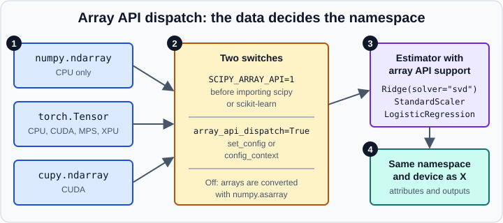

Array API and GPU Support (Experimental)
|
This content was generated with the assistance of AI and should be verified against the official documentation before being relied on in production. |
This page was checked in October 2026 against scikit-learn 1.9 (1.9.1, released September 2026) on Python 3.13 with NumPy 2.5. The examples that need no special hardware were run on those versions with the reference implementation array-api-strict; the GPU snippets are shown as written for CUDA hardware. The 1.10 development line adds more estimators and fixes, and those items are labelled "upcoming".
Most scikit-learn estimators are written for NumPy arrays and run on the CPU. Since version 1.2 a growing subset can also accept any array that follows the Python array API standard, for example a PyTorch tensor or a CuPy array living on a GPU. The estimator then computes in the array’s own library and on the array’s own device, and the fitted attributes stay there. This support is called experimental in the official guide: it must be enabled explicitly, assumes recent versions of the array libraries, and its backwards compatibility is not guaranteed while it carries that label.
The NumPy side of the standard (the numpy.array_api module that was removed in NumPy 2.0, and the main namespace that now follows the standard) is described in The Array API Standard. This page covers the scikit-learn side.
How dispatch works

The figure shows the sequence in four numbered parts:
-
Input arrays. A NumPy
ndarray, atorch.Tensor(CPU, CUDA, MPS or XPU) or acupy.ndarray(CUDA). Any array API conforming library may work, but the libraries listed in the table below are the ones tested automatically on a regular basis. -
Two switches. The environment variable
SCIPY_ARRAY_API=1must be set before SciPy or scikit-learn is imported, and the configuration optionarray_api_dispatchmust beTrue. With the option off, scikit-learn converts every input withnumpy.asarray, which works for some libraries (a JAX array, for instance) and fails for others (a tensor allocated on a GPU). -
Estimator with array API support. Only some estimators, metrics and tools are written against the standard; the others still need NumPy.
-
Result. Arrays returned by
predict,transformand the fitted attributes belong to the same library and device as the data given tofit.
Supported libraries and devices
| Library | Devices covered by automated tests | Remarks |
|---|---|---|
PyTorch |
CPU, NVIDIA GPU (CUDA), Apple GPU (MPS), Intel GPU (XPU) |
MPS support in PyTorch is incomplete, and speed is not necessarily better than on the CPU. Intel GPU support needs PyTorch 2.12 or later. |
CuPy |
CUDA |
Use the top-level |
dpnp |
CPU, Intel GPU (SYCL) |
See the dpnp installation page for driver setup. |
Other libraries and devices that conform to the standard may work out of the box. array-api-strict is the reference implementation: it runs on the CPU, rejects anything the standard does not guarantee, and is therefore the tool of choice to find mistakes before renting a GPU. It also drives the examples below.
Enabling the support
Both switches are required.
export SCIPY_ARRAY_API=1
python train.pyThe variable is intended for temporary use, because it changes SciPy behaviour globally, so set it for the process that needs dispatch rather than in a shell profile. In Python, enable dispatch for a block of code with config_context, or for the whole process with set_config. The official guide recommends a global setting for consistent behaviour, and a context manager when you want to avoid leaking the setting into other code.
import sklearn
from sklearn import config_context
print(sklearn.get_config()["array_api_dispatch"])
sklearn.set_config(array_api_dispatch=True) # global; needs SCIPY_ARRAY_API=1
print(sklearn.get_config()["array_api_dispatch"])
with config_context(array_api_dispatch=False):
print(sklearn.get_config()["array_api_dispatch"])Output, with SCIPY_ARRAY_API=1 set:
False True False
Without the environment variable, set_config(array_api_dispatch=True) raises a RuntimeError that asks you to set SCIPY_ARRAY_API=1 before importing scikit-learn or SciPy. Setting the variable after the import is too late.
A first example on a GPU
The official guide runs LinearDiscriminantAnalysis on a CUDA device with PyTorch. Replace torch.asarray(..., device="cuda") with cupy.asarray(...) for CuPy or dpnp.asarray(...) for dpnp, or change the device= argument ("cpu", "xpu", "mps") to target another PyTorch device. This snippet needs a CUDA machine.
import torch
from sklearn import config_context
from sklearn.datasets import make_classification
from sklearn.discriminant_analysis import LinearDiscriminantAnalysis
X_np, y_np = make_classification(random_state=0)
X_torch = torch.asarray(X_np, device="cuda", dtype=torch.float32)
y_torch = torch.asarray(y_np, device="cuda", dtype=torch.float32)
with config_context(array_api_dispatch=True):
lda = LinearDiscriminantAnalysis()
X_trans = lda.fit_transform(X_torch, y_torch)
print(type(X_trans)) # <class 'torch.Tensor'>
print(X_trans.device.type) # cudaThe same code path without a GPU
array-api-strict lets you exercise the identical code path on any laptop. Install it with pip install array-api-strict, set SCIPY_ARRAY_API=1, and run:
import array_api_strict as xp
from sklearn import config_context
from sklearn.datasets import make_classification
from sklearn.discriminant_analysis import LinearDiscriminantAnalysis
X_np, y_np = make_classification(random_state=0)
X = xp.asarray(X_np)
y = xp.asarray(y_np)
with config_context(array_api_dispatch=True):
lda = LinearDiscriminantAnalysis()
X_trans = lda.fit_transform(X, y)
print(type(X_trans).__module__, type(X_trans).__name__)
print(X_trans.shape)
print(type(lda.means_).__module__)Output:
array_api_strict._array_object Array (100, 1) array_api_strict._array_object
The transformed data and the fitted attribute means_ are both array_api_strict arrays: nothing was converted to NumPy on the way. With a GPU library the objects would be tensors on the GPU.
Input and output rules
The guide defines two conversion rules for mixed inputs, and one for outputs.
| Situation | Rule |
|---|---|
Estimator methods ( |
Everything follows |
Scoring functions and metrics |
Everything follows |
Outputs |
Arrays come back from the same library and on the same device as the input. A metric that returns one number returns a Python |
Fitted attributes |
Arrays computed during |
The rule that everything follows X is what makes a pipeline that moves data to the GPU in the middle possible. A TargetEncoder needs CPU data (it works on categorical strings and on y), a FunctionTransformer can then move X to a GPU, and a following Ridge accepts the GPU X together with a CPU y, because pipelines cannot transform y and Ridge converts it itself. Scoring functions inside cross_validate or GridSearchCV accept mixed inputs for the same reason.
Predicting with data from another namespace is an error
Fitted attributes live where the training data lived, so predict and transform must receive arrays from the same library and device. Passing NumPy data to a model fitted on another namespace raises a ValueError.
import array_api_strict as xp
from sklearn import config_context
from sklearn.datasets import make_classification
from sklearn.discriminant_analysis import LinearDiscriminantAnalysis
X_np, y_np = make_classification(random_state=0)
with config_context(array_api_dispatch=True):
lda = LinearDiscriminantAnalysis().fit(xp.asarray(X_np), xp.asarray(y_np))
try:
lda.transform(X_np)
except ValueError as exc:
print("ValueError:", str(exc).partition("fit(). ")[0] + "fit().")Output:
ValueError: Inputs passed to LinearDiscriminantAnalysis.transform() must use the same namespace and the same device as those passed to fit().
The full message continues with the two namespaces involved and the call that fixes the problem.
Moving a fitted estimator between devices
sklearn.utils._array_api.move_estimator_to (added in 1.9) transfers the array attributes of a fitted estimator to another namespace and device, for example to train on a GPU and serve on a CPU. It lives in a private module (note the leading underscore), so treat the import path as subject to change while the feature is experimental.
import numpy as np
import array_api_strict as xp
from sklearn import config_context
from sklearn.datasets import make_classification
from sklearn.discriminant_analysis import LinearDiscriminantAnalysis
from sklearn.utils._array_api import move_estimator_to
X_np, y_np = make_classification(random_state=0)
X, y = xp.asarray(X_np), xp.asarray(y_np)
with config_context(array_api_dispatch=True):
lda = LinearDiscriminantAnalysis().fit(X, y)
lda_np = move_estimator_to(lda, np, device="cpu")
X_trans = lda_np.transform(X_np)
print(type(lda.means_).__module__, "->", type(lda_np.means_).__module__)
print(type(X_trans).__name__)Output:
array_api_strict._array_object -> numpy ndarray
A pipeline on array API data
Several preprocessing steps and linear models support dispatch, so a whole pipeline can run on non-NumPy data. The example also shows that the result matches the NumPy run.
import array_api_strict as xp
from sklearn import config_context
from sklearn.datasets import make_regression
from sklearn.linear_model import Ridge
from sklearn.metrics import r2_score
from sklearn.model_selection import train_test_split
from sklearn.pipeline import make_pipeline
from sklearn.preprocessing import StandardScaler
X_np, y_np = make_regression(n_samples=200, n_features=5, noise=1.0, random_state=0)
with config_context(array_api_dispatch=True):
X, y = xp.asarray(X_np), xp.asarray(y_np)
X_train, X_test, y_train, y_test = train_test_split(X, y, random_state=0)
model = make_pipeline(StandardScaler(), Ridge(solver="svd"))
model.fit(X_train, y_train)
pred = model.predict(X_test)
score = r2_score(y_test, pred)
print(type(pred).__module__, type(X_train).__module__)
print(type(score).__name__, round(score, 4))
# the same pipeline on NumPy, dispatch off
X_tr, X_te, y_tr, y_te = train_test_split(X_np, y_np, random_state=0)
ref = make_pipeline(StandardScaler(), Ridge(solver="svd")).fit(X_tr, y_tr)
print(round(r2_score(y_te, ref.predict(X_te)), 4))Output:
array_api_strict._array_object array_api_strict._array_object float 0.9999 0.9999
train_test_split splits the array API arrays without converting them, the predictions stay in the array_api_strict namespace, and r2_score returns a plain Python float. Pass solver="svd" to Ridge: the other solvers are not in the supported list below.
What supports array API inputs
The user guide keeps the authoritative lists, and they grow in every release. The groups below summarise them for version 1.9; check the guide for your installed version, because the list changes between releases.
| Group | Members in 1.9 |
|---|---|
Estimators |
|
Meta-estimators |
Supported when the base estimator is: |
Metrics |
Many classification, regression and clustering scores, such as |
Tools |
|
Trees, forests, boosting models, SVMs, nearest neighbours, clustering algorithms such as KMeans and most feature-selection and imputation classes are not on the list, because they rely on compiled (Cython) code that works on NumPy memory. Feeding one of them an array API array under dispatch produces a failure that is hard to read. For instance, fitting a RandomForestClassifier on an array_api_strict array raises TypeError: 'dtype' must be a dtype, not a <class 'type'>. Check the list first, and keep unsupported steps on NumPy data.
What each release added
The support grew release by release; the 1.6 to 1.9 release notes record the additions.
| Version | Highlights |
|---|---|
1.6 (December 2024) |
|
1.7 (June 2025) |
More metrics (for example |
1.8 (December 2025) |
|
1.9 (June 2026) |
|
1.9.1 (September 2026) |
Fix: classification metrics accept pandas labels when dispatch is on and the predictions come from another namespace or device. |
1.10 (upcoming) |
|
Source: scikit-learn 1.9 release notes and the 1.6, 1.7 and 1.8 notes linked in the references.
Numerical caveats
float64 on some devices. A few operations deliberately compute in float64 to avoid overflow and keep results correct, for example euclidean_distances and StandardScaler. PyTorch on MPS and some Intel GPU stacks (PyTorch XPU, dpnp) have no float64. On those devices scikit-learn falls back to float32, and results can be numerically less stable than on the CPU. If the answers differ from a CPU run, compare both in float32 before suspecting a bug.
Pitfall: speed is not guaranteed. Moving a small problem to a GPU is usually slower because of transfer time, and a library or device combination that is only partially supported (MPS is the documented example) may not beat the CPU at all. Measure on your data. See Performance and Parallelism for the CPU-side options.
Pitfall: the import order. SCIPY_ARRAY_API=1 must be in the environment before the first import scipy or import sklearn. In a notebook, set it with os.environ in the very first cell and restart the kernel if a scientific library was already imported.
Pitfall: experimental means unstable. Names such as move_estimator_to sit in private modules, supported lists change, and the project does not backport fixes to older array libraries. Pin your array library versions and re-run your checks when you upgrade scikit-learn.
Pitfall: other array types. With dispatch off, anything that is not a NumPy array is converted with numpy.asarray. That happens silently for CPU data and raises for GPU data. If your code receives tensors by accident, enable dispatch deliberately instead of relying on the conversion.
Testing array API support (for developers)
Estimator authors declare support with the array_api_support tag, which makes the common tests compare results on NumPy and on array API inputs. Install array-api-strict in the test environment and run pytest -k "array_api" -v; the -v flag matters because checks with missing dependencies are skipped, not failed. The strict namespace simulates non-CPU devices, so it catches most errors, but only real GPU runs prove device handling. On macOS with MPS, set PYTORCH_ENABLE_MPS_FALLBACK=1 before running the tests. See The Estimator API for tags and the developer contract.